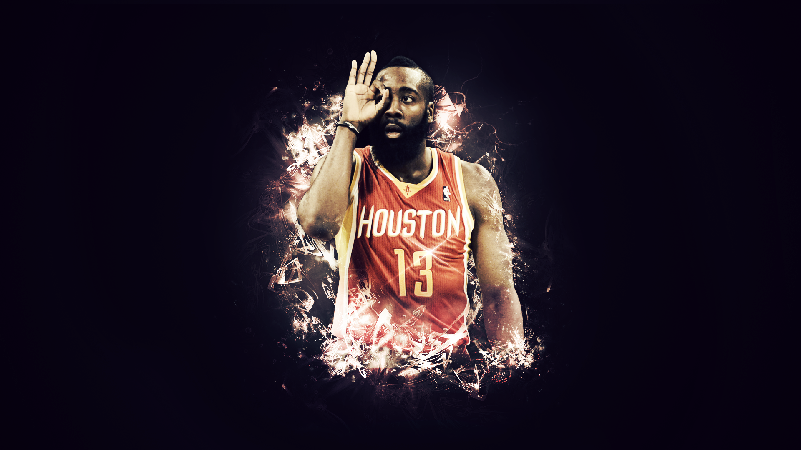

欢迎来到57pen的Web
这里会有关于我个人的兴趣爱好、学习目标、获得的成就、一些个人的感悟以及对未来的一些展望啦。这是我第一次写blog，相信会是一个新的开始，会记录我未来成长的点滴。 —————2023.9.8
<-------------左上角目录还有点点内容
一些简单的自我介绍啦
我的名字叫做吴钦堋啦，是来自福建泉州晋江市安海镇的一名在校就读的大学生 “嗯” 是就读的福州大学21级大数据专业，（本人性格开朗大方，对于世界保持好奇感，具有探索精神,尊师敬长，尊老爱幼，是一名爱国爱党爱人民的优秀男大学生） 好喽就写这么多了在写就写不下去喽。
Basketball and FPS
篮球是我坚持了最久的一件事情，通常时候这都是一项竞技运动，它通过与他人的对抗，比拼，当获胜时取得成就感，而输掉比赛则可以激发自己更努力更用心的对待篮球，它也可以是一个压力的出口，在球场上独自练球来平静自己的内心，这将是我会坚持很久的运动。最后在这里再说一说我心里最佳的MVP
JAMES HARDEN

游戏也是我闲暇时光的填充物之一，相比于放松的养成类游戏，我更享受FPS游戏中强竞技性给我带来的冲击力，csgo是我主要的发展方向Valorant则是我在紧张激烈的csgo里被强敌击败后的归属。
无啊 哈哈 还没啥好意见可以分享的
想什么呢 才刚刚起步阿我这个 还没成绩呢
以下是我所获得的成绩
- ...
- ...
- ... hhh 以后会有的